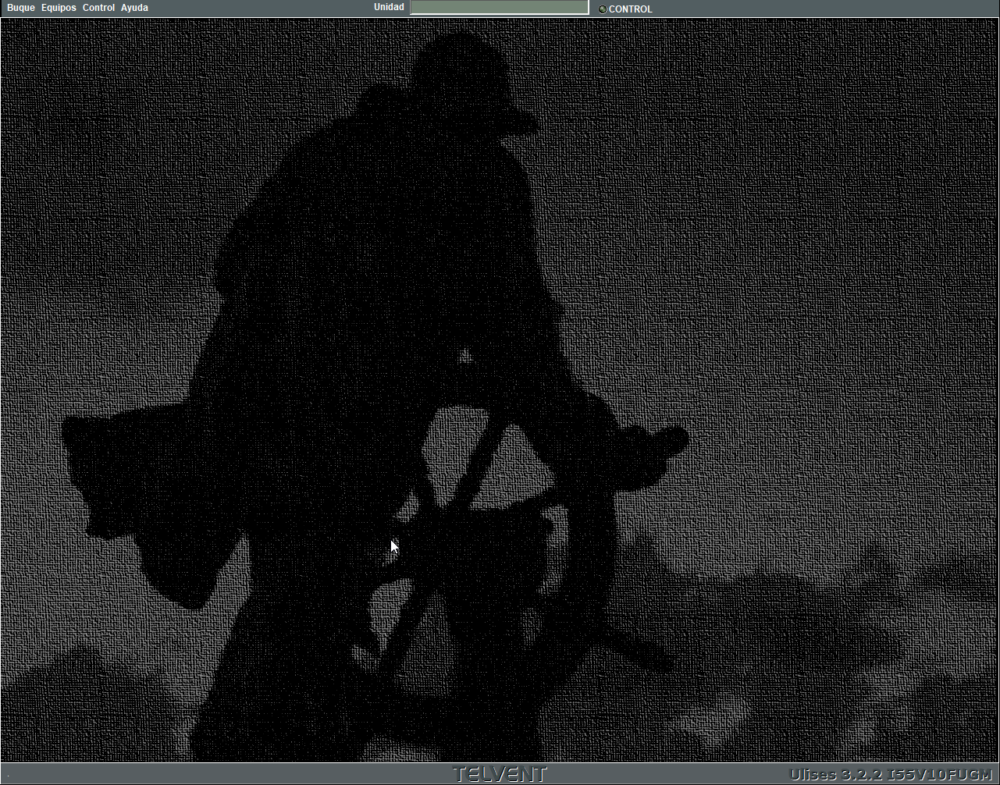

Consola de Instructor
Las consolas de instructor se componen de una Pantalla de Presentación Cartográfica y una Pantalla de Control.


Sobre la Pantalla de Presentación Cartográfica se muestra de forma continua la situación de las unidades sobre una cartografía digital. También incluye controles para la Preparación, Ejecución y Análisis de Ejercicios.
En la Pantalla de Control se incluye un menú que permite al instructor acceder a funciones de control del ejercicio en ejecución, además, cuando el instructor controla una unidad, la Pantalla de Control muestra la Conning Display de la unidad controlada.
La Conning Display consiste en un resumen completo de todos los subsistemas de la unidad (gobierno, propulsión, maniobras, pesca...) y permite al instructor acceder a las funciones navegación y gobierno del buque controlado.
El funcionamiento de la Conning Display se describe detalladamente en el documento Conning Display - Manual del Operador.